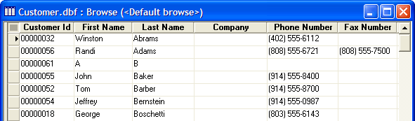

Selecting the Appropriate View of Your Data
Alpha Anywhere uses form and browse layouts for entering and reviewing information stored in tables and sets. Each layout provides different features and tools for editing data.
In Form View, you typically work with one record at a time. A form is a window containing fields from the table, and field values for the particular record you are viewing. In the example below, the form displays one record, which corresponds to a single row of data from a table.
Each table and set has at least one form called the Default Form. The Default Form contains every field in the table or set.

Form View
Objects displayed on a form are called controls. For example, the form above contains field label controls, and text box controls. Forms can also display a variety of other controls like images, graphics, buttons, and colors. One of the advantages of viewing data in forms is that you can arrange the controls in various ways to suit your needs.
Alpha Anywhere uses form and browse layouts for entering and reviewing information stored in tables and sets. Each layout provides different features and tools for editing data. Each table and set also has a default browse. The Default Browse contains every field in the table or set. In Browse View, you work with multiple records at the same time, in a familiar tabular, spreadsheet style layout.

Browse View
The task at hand dictates the best layout. Experiment with both forms and browses to determine their suitability for your different tasks. Some tasks are better suited for an Xbasic script. Refer to the following topics for an introduction to using Xbasic to process the records in a table or set.
((Contrasting TABLE.OPEN Functionwith TABLE.CURRENT Functionand TABLE.GET Function|Contrasting TABLE.OPEN()with TABLE.CURRENT()and TABLE.GET()))
Xdialog forms are different from normal forms, in that they are manually coded. There are advantages and disadvantages associated with Xdialog forms.
They only are appropriate for users who have mastered Xbasic
They have more flexibility in presentation and design than regular forms
For more information, see Learning Xdialog and Display an Xdialog Box.